Grunts
General Ex Pop
The most common enemy in every Trial. Unlike most Ex Pop, Grunts can peek through doors, lock and unlock them, and crouch through small gaps treat them as more capable than they look.
Sinyala Facility Handbook
Threat profiles with a live facility atmosphere.


Ex Pop is short for "Experimental Population" the failed test subjects of Murkoff's earlier experiments, used as hostile obstacles throughout every Trial. Reagents are given no weapons, so avoidance and stealth are the only real defense.

General Ex Pop
The most common enemy in every Trial. Unlike most Ex Pop, Grunts can peek through doors, lock and unlock them, and crouch through small gaps treat them as more capable than they look.
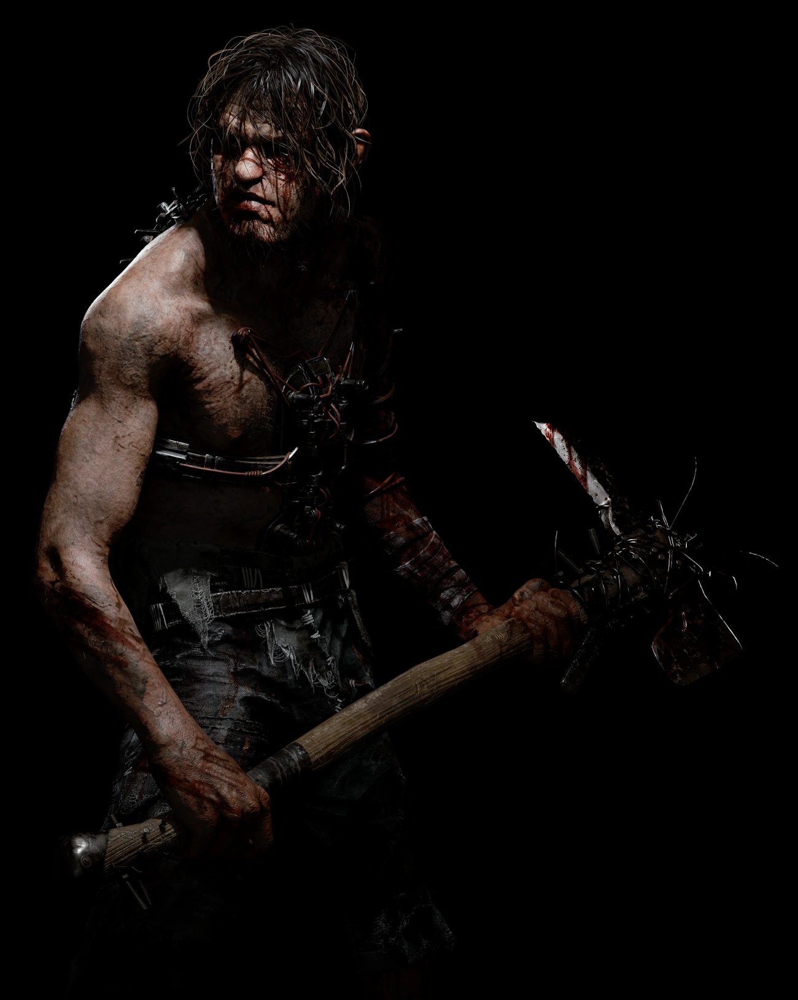
General Ex Pop
Larger, stronger versions of the regular Grunt. They hit harder and can stagger you on contact, so keep more distance than you would from a standard Grunt.
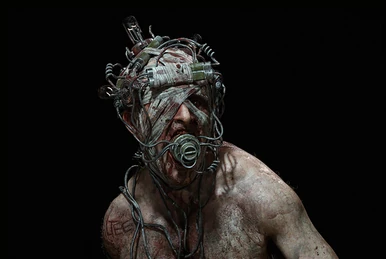
Specialist
Blind and never reacts to being seen, but extremely sound sensitive footsteps, thrown objects, and breaking doors will draw him in. Immune to the Blind Rig's smoke, so distance and silence are your only real counters.
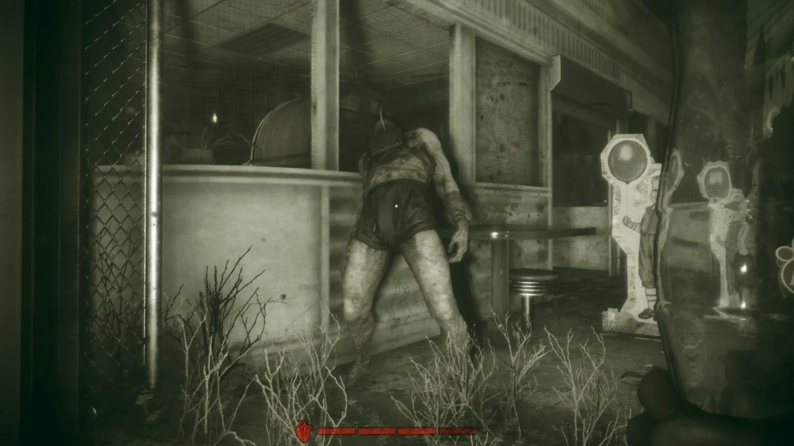
Specialist
Appears on every map. If startled, it lets out a scream that freezes nearby Reagents in place and draws every other enemy toward the sound. Crouch and move slowly past them to avoid triggering it.
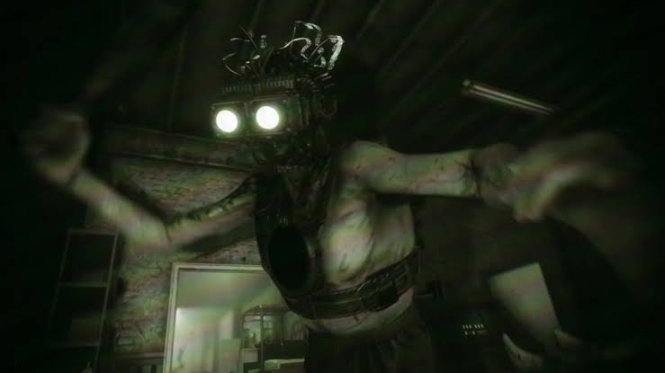
Specialist
Wears night vision goggles and moves quickly, able to crawl through tight gaps. Wields a machete and is most dangerous up close use throwables to stun him and keep moving rather than trying to outrun him in the open.
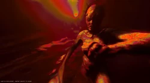
Specialist
An ambush type Ex Pop that waits in hiding and lunges at Reagents who pass too close. Staying alert around dark corners and confined spaces is the best defense.
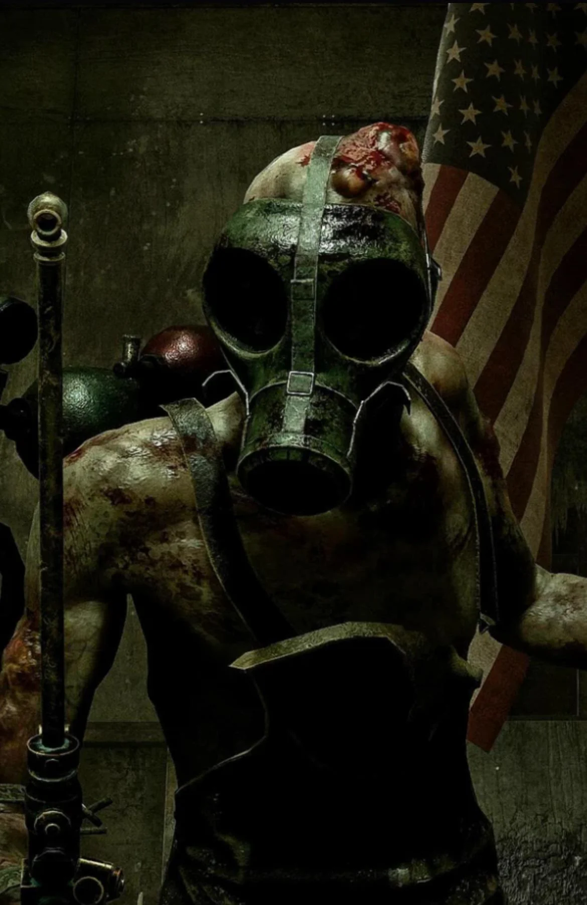
Specialist
Shoves Reagents on contact, staggering them and creating an opening for other Ex Pop nearby to close in. Best handled by keeping distance rather than pushing past.
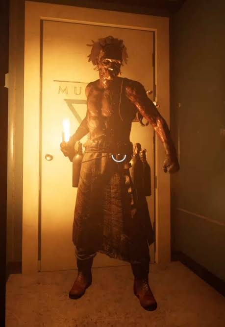
Specialist
Introduced with Season 2: Project Breach, alongside the Downtown environment. A ranged threat that lobs projectiles at Reagents from a distance, punishing exposed sightlines.
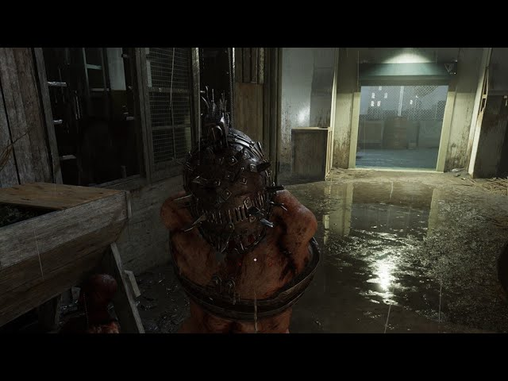
Specialist
Introduced in Season 7. A fast, beast like Ex Pop modified for speed with amputated arms, relying on raw pursuit speed rather than weapons outmaneuvering it matters more than outrunning it in a straight line.
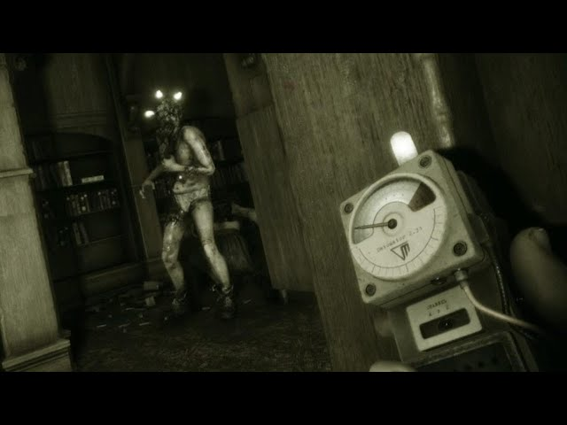
Trial specific
An Ex Pop tied to specific Trial objectives rather than general patrols, encountered while completing certain tasks. Treat any Scapegoat encounter as objective critical and approach with extra caution.
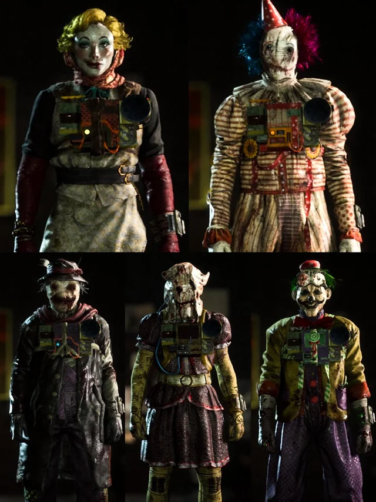
Invasion mode
Not a standard Ex Pop, but a player controlled enemy in the Invasion PvP mode who blends in among the Reagent team. The Stun Rig and Jammer Rig both work against them, unlike some other Specialists.
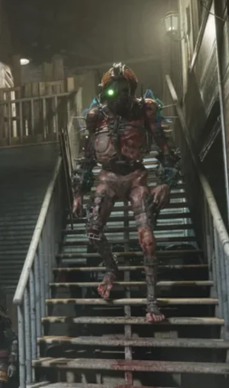
Henrietta Grubbs · Unique Threat
A cyborg Ex Pop that can appear in any Trial and locks onto one random Reagent, tracking them relentlessly across the whole map. She's slow, but bottles, bricks, and Rig abilities have no effect on her the only real counter is to keep moving and use the environment to break line of sight, since hiding spots offer less protection against her than against other Ex Pop.